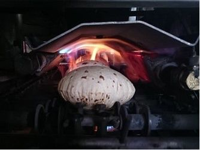
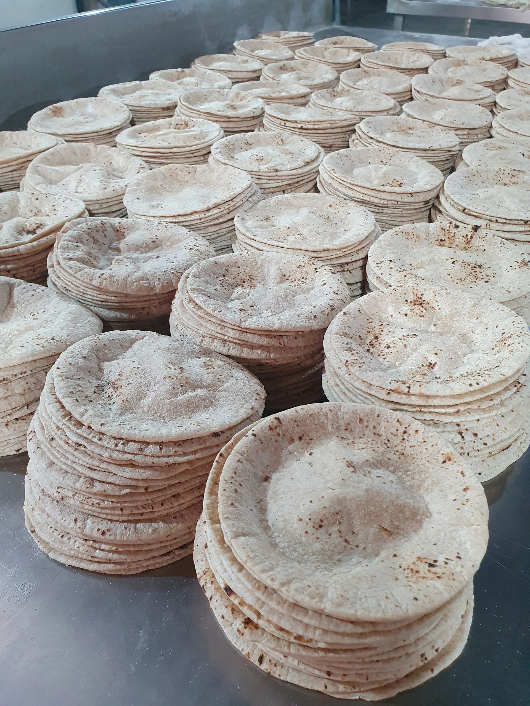
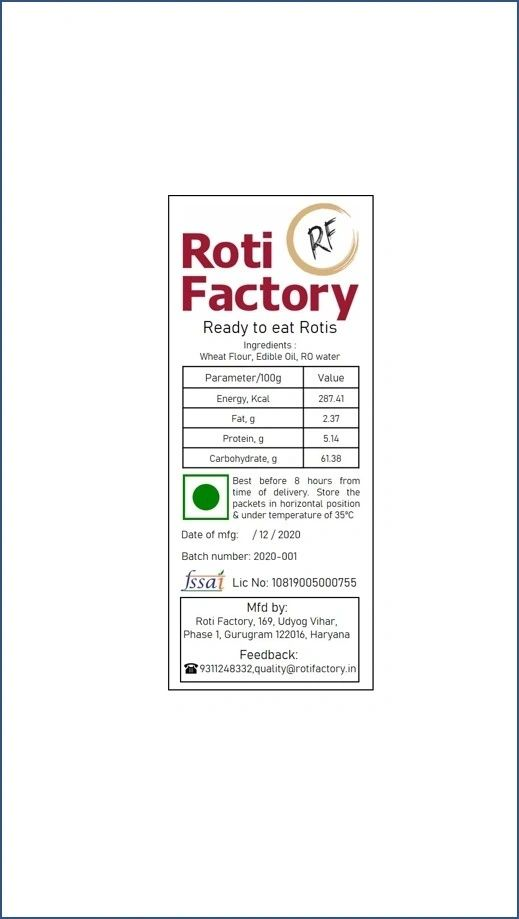

Who we are
Roti Factory is a leading supplier of Rotis in bulk in Delhi NCR since 2014
Factory Visit
Roti Factory is a leading supplier of Rotis in bulk in Delhi NCR since 2014
Factory Visit
We make the best Rotis in the country.
Our Rotis melt in your mouth and some leave a hint of flavour too!
Explore our rotis
Our USP - Safety at all-times, Quality Rotis every-time and Deliveries on-time
Click for audit


Fondly known as 'Badi Madam', led this initiative as an experiment in 2006. With a single machine & a few dedicated personnel, she successfully created a business of it. Currently, she heads our quality audit team and works closely with all the team leaders across departments. She ensures that our production processes are strictly followed, in order to make consistent Rotis, that are soft, well-cooked & flavourful. Also, she helps train our staff on a regular basis.
Fondly known as 'Choti Madam', she was the first person to join the team led by Mrs. Geeta. She is by far the most experienced person in our Roti industry. She has worked diligently for over 12 years to completely handle production, order management, packaging, HR and client dealing. She can tell just by looking at a Roti, if it is fit to clear our internal quality audit.
He joined the Roti business in 2013 as a supervisor on our production floor. Since then he has gained extensive experience in handling production, packaging, clients, orders and quality control. He is the first disciple of 'Choti Madam'. He has an important job to connect our production to packaging to delivery to client satisfaction.
Engineer & MBA with over 8 years of work experience in corporate. Left a high profile corporate career as soon as the entrepreneurial bug hit him. In the year 2011, he joined KM Foods to help the family business grow. In 2014 he started Roti Factory, an off-shoot of KM Foods, to fully automate the production of Rotis. Over the years he has been instrumental in expanding operations in Delhi NCR. Roti Factory is run in accordance with the latest standards of compliance in food industry.
Our team primarily comprise of young boys who joined us at inception and have trained with us over the last decade. Most of them are from humble backgrounds from Rajasthan, UP, Bihar, Assam & Uttarakhand. They have been carefully chosen & trained adequately so that they understand the fine nuances of our Food Industry. Also, they all make a great team together!